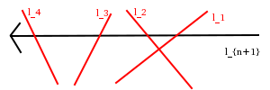

2.2.13
本の直線を引いたときの領域の数をで表し、小さいについて試してみると以下のようになる。
| 0 | 1 | 2 | 3 | 4 | 5 | ||
|---|---|---|---|---|---|---|---|
| 1 | 2 | 4 | 7 | 11 | 16 |
差を取るとずつ増えているので漸化式はと表せる、つまり と予想がつくのでそれを示す。
今、平面に本の直線があり平面が個の領域に分割されているとする。 ここに1本新たに直線を追加することを考える。この追加した直線はいずれの直線とも平行でなく、また3点で交わることはないので本の直線とちょうど1回ずつ交差する。
図のように今追加する直線をとし、適当にに向きをつけてもともと平面にあった直線を交わる順にとしよう。 このとき、もともとどのように直線が交わっていたかに関係なく追加した直線は領域を個増やす。 なぜなら両端以外ではと交わることでその2本の直線で交わっていた領域は2つに分断される。 また両端では片側が直線でもう片側が開いているだけなので、やはり同じようにもとの領域は2つに分断される。 よって本の直線と交わることで領域がちょうど個増えるのでが成り立つ。
